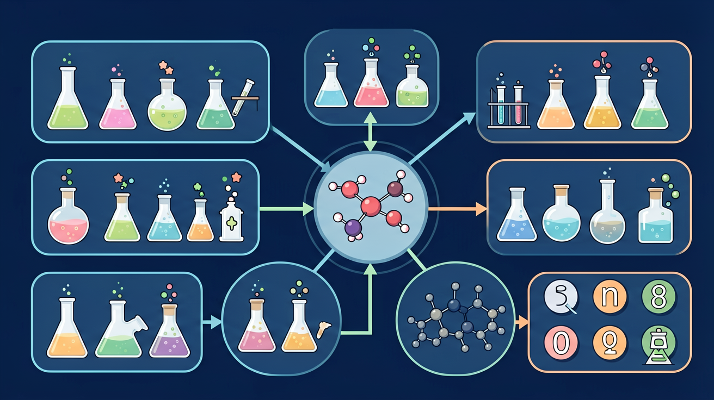

真实情境
加油站汽油分类
某加油站正在对不同标号的汽油进行分类储存。工作人员需要根据汽油的烃类组成，快速判断其属于烷烃、烯烃还是芳香烃，以便进行正确的储存和处理。
已有经验
学生已掌握烃类的基本结构和命名规则
真正卡点
难以快速区分不同烃类的结构特征和反应类型
本课任务
通过结构特征判断烃类类型，并预测其典型反应
下列最可能使溴水褪色的是？
某加油站正在对不同标号的汽油进行分类储存。工作人员需要根据汽油的烃类组成，快速判断其属于烷烃、烯烃还是芳香烃，以便进行正确的储存和处理。
学生已掌握烃类的基本结构和命名规则
难以快速区分不同烃类的结构特征和反应类型
通过结构特征判断烃类类型，并预测其典型反应
烷烃通式 CₙH₂ₙ₊₂，碳碳单键，化学性质稳定。在光照下与卤素发生取代反应。燃烧生成 CO₂ 和 H₂O。命名按主链碳数与取代基。取代是逐步替换氢，产物是混合物。
烷烃在光照下与氯气主要发生？
拿到一个未知烃，怎样用结构和实验现象判断它是哪一类？
先选一个你关心的问题。后面的例子、提示和 AI 学伴都会围绕这个问题来帮你推进。
选择或输入后，本课会围绕你的问题展开。
理解烃类结构与性质的关系，掌握通过分子式、通式及实验现象推断烃类结构类型的基本方法，培养证据推理与模型认知素养
某烃分子式C4H8，可使溴水褪色但不能使酸性高锰酸钾溶液褪色，确定该烃为环丁烷而非丁烯的推断过程
先根据分子式用通式判断可能类别（烷/烯/炔/环烷等），再结合加成、氧化等特征反应现象排除不可能结构
易忽略环烷烃与烯烃的分子式相同（CnH2n），误将不能使高锰酸钾褪色的环烷烃判断为烯烃
课堂任务：请用“现象/文本/地图/实验数据 → 关键证据 → 学科解释 → 迁移应用”四步，重写一个关于「烃类综合：从结构到反应类型的快速判断」的新问题。
如果你能解释“拿到一个未知烃，怎样用结构和实验现象判断它是哪一类？”，这节课就真正过关了。
烯烃含碳碳双键（通式 CₙH₂ₙ），炔烃含碳碳三键，均易发生加成反应（加 H₂、X₂、H₂O 等）。乙烯能使溴水和酸性高锰酸钾褪色，可用于鉴别不饱和烃。加成使不饱和键打开，原子加到两端碳上。
能使溴水因加成而褪色的是？
苯 C₆H₆ 具有平面正六边形结构，碳碳键完全等同，介于单双键之间，不是三个单键加三个双键。苯难加成、易取代（如硝化、卤代），体现其特殊稳定性。苯不能使溴水（因加成）褪色，可与之区别于烯烃。
关于苯的化学性质，正确的是？
综合题常给分子式或燃烧数据推结构类型。先用通式判断可能类别，再结合加成、氧化、取代等实验现象缩小范围。同分异构体数目与命名也是高频考点。
由 CₙHₘ 与通式对比：烷 CₙH₂ₙ₊₂，烯/环烷 CₙH₂ₙ，炔/二烯 CₙH₂ₙ₋₂ 等。再根据能否加成、是否有异构作答。
常见误区：常见误区是把环烷当成烷烃通式，或忽略同分异构导致的多解。
通式为 CₙH₂ₙ₊₂ 的烃属于？
本课任务：用分子形状对比单键、双键的几何差异，整理烷烃取代与烯烃加成的鉴别证据表（溴水/酸性高锰酸钾）。
写清自变量、因变量和至少两个保持不变的条件，避免同时改变多个因素后无法归因。
至少记录三组带单位的数据或三个可复查的现象，不用“变大了”“更明显”代替证据。
用本课公式、粒子模型或受力关系解释趋势，并指出结论成立所依赖的模型条件。
换一个参数或真实情境预测结果，再用仿真检验；若不一致，回查变量、单位和边界条件。

识别并写出本节核心定义、公式或分类标准。
把本课标准用于一个实验数据或真实生活场景。
设计一个反例，说明常见错误为什么站不住脚。
碳碳双键、三键和苯环都会提高不饱和度，是判断反应类型的关键。
溴水、高锰酸钾酸性溶液等可帮助识别部分不饱和结构。
碳数增加后，碳链异构和位置异构会让同分子式对应多种结构。
记忆锚点：综合判断四连问：有几碳？有无不饱和？现象是什么？反应断哪根键？
易错提醒：常见错误：把苯当普通烯烃处理。苯环稳定，不能简单等同于三个 C=C。
不要只看结论。动手改变变量后，再用一句话解释画面为什么变了。